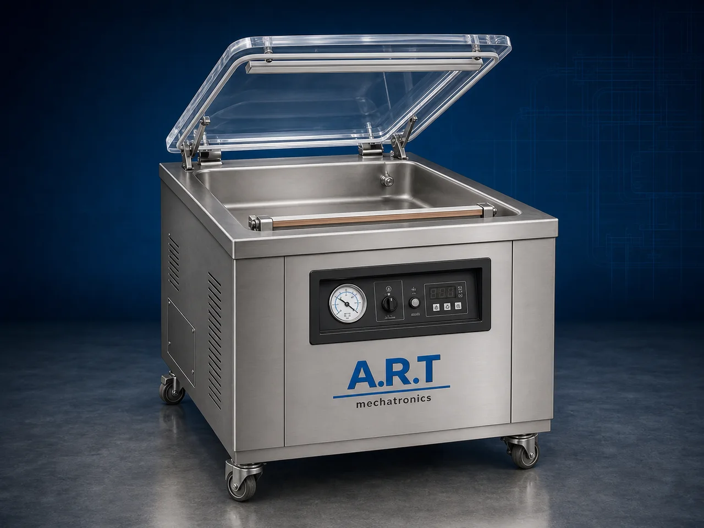

Vacuum Packing Machine (Automatic Industrial Vacuum Packaging System)
A Vacuum Packing Machine, also known as a Vacuum Packaging Machine, Vacuum Sealing Machine, or Industrial Vacuum Packing System, is an advanced packaging solution designed for air removal, vacuum sealing, airtight pouch packaging, shelf-life enhancement, moisture protection, and hygienic industrial packaging applications.

About the Vacuum Packing Machine
Vacuum packing systems are widely used for:
- Airtight vacuum packaging
- Shelf-life extension
- Moisture-free packaging
- Oxygen reduction packaging
- Industrial food packaging
- High-quality export packaging
The machine improves:
- Product shelf life
- Packaging hygiene
- Product freshness
- Moisture protection
- Oxidation prevention
- Packaging quality
Industrial vacuum packing machines use:
- High-efficiency vacuum pumps
- Precision heat sealing systems
- Vacuum chambers or nozzle systems
- PLC and automation controls
- Airtight sealing mechanisms
to remove air from packaging pouches and create tightly sealed vacuum packs for long-term product preservation and premium packaging quality.
Vacuum packing machines are widely used in industries such as:
Food processing industries
Spice industries
Dry fruits & nuts industries
Pan masala & mouth freshener industries
Pharmaceutical industries
FMCG industries
Chemical industries
Export packaging industries
where airtight packaging and product freshness preservation are essential.
The machine is highly suitable for:
- Vacuum pouch packaging
- Food preservation packaging
- Dry product packaging
- Spice vacuum packing
- Dry fruit packaging
- Industrial export packaging
ART Mechatronics offers high-performance vacuum packing machines, engineered for continuous industrial operation, strong vacuum sealing quality, hygiene protection, and reliable long-term packaging performance.
Working Principle of Vacuum Packing Machine
Products are placed inside:
- Laminated pouches
- Vacuum pouches
- Nylon barrier pouches
- Food-grade packaging bags
Filled pouch is placed inside vacuum chamber or nozzle sealing section
High-efficiency vacuum pump removes air from pouch completely.
Machine removes:
- Oxygen
- Moisture-laden air
- Contaminants
- Excess internal air pressure to improve product shelf life and freshness.
Precision heat sealing system creates: Airtight seals Leak-proof packaging Moisture-resistant sealing
Cooling cycle stabilizes seal immediately after sealing operation.
Vacuum-sealed products discharged automatically for: Cartoning Storage Export packaging Dispatch operations
Types of Vacuum Packing Machines
- 1. Chamber Vacuum Packing Machine
Designed for: ✔ Standard industrial vacuum packaging applications
- 2. Double Chamber Vacuum Packing Machine
Suitable for: ✔ High-volume continuous vacuum packaging operations
- 3. Nozzle Type Vacuum Packaging Machine
Uses: ✔ Large pouch and industrial packaging applications
- 4. Food Grade Vacuum Packing Machine
Designed for: ✔ Hygienic food and pharmaceutical packaging systems
- 5. Continuous Vacuum Packaging Machine
Suitable for: ✔ High-speed industrial vacuum packaging lines
- 6. Fully Automatic Vacuum Packaging System
Designed for: ✔ Integrated industrial packaging automation lines
Industries Using Vacuum Packing Machines
🍃 Food Processing Industry Snack, namkeen, flour, grains, pulses, and ingredient vacuum packaging systems 🌶️ Spice Industry Turmeric, chilli powder, coriander, cumin, herbs, and seasoning vacuum packaging systems 🥜 Dry Fruits & Nuts Industry Almonds, cashews, pistachios, makhana, peanuts, and dry fruit packaging systems 🌿 Pan Masala & Mouth Freshener Industry Pan masala, supari, elaichi, and mouth freshener vacuum packaging systems 🛒 FMCG Industry Consumer product airtight packaging systems 💊 Pharmaceutical Industry Medicine and healthcare vacuum packaging systems ⚗️ Chemical Industry Moisture-sensitive powder and granule packaging systems 📦 Export Packaging Industry Long shelf-life export packaging systems
Features & Advantages
- Strong and airtight vacuum packaging quality
- Extends product shelf life significantly
- Prevents moisture and oxidation damage
- Maintains freshness and product hygiene
- High-performance vacuum pump system
- Supports multiple pouch types and sizes
- Reduces product spoilage and wastage
- Hygienic food-grade construction available
- Reliable long-term industrial performance
Technical Highlights
Machine Type: Chamber vacuum machine Double chamber vacuum system Nozzle vacuum sealer Packaging Material: Vacuum pouches Nylon barrier pouches Laminated films Food-grade packaging bags Features: High-efficiency vacuum pump Heat sealing system PLC control system Touchscreen HMI Adjustable vacuum timing Sealing Type: Airtight seal Vacuum seal Moisture-proof seal Automation: Semi-automatic Fully automatic industrial systems
Turnkey Vacuum Packaging Solutions
ART Mechatronics offers: Complete vacuum packaging systems Airtight industrial packaging solutions Packaging automation integration systems Conveyor synchronization systems Installation & commissioning After-sales service & AMC
Why Choose Art Mechatronics
Expertise in industrial packaging and sealing systems Customized vacuum packaging solutions for multiple industries High-performance and durable vacuum technology Advanced automation and sealing systems Proven industrial packaging performance across sectors
Applications
Food Processing Industries Spice Processing Plants Dry Fruit Packaging Units FMCG Packaging Facilities Pharmaceutical Industries Export Packaging Industries
Industries that use the Vacuum Packing Machine
Get pricing & specs for the Vacuum Packing Machine
Share the product, target capacity, current process and plant location. These details help our engineers discuss the right machine or line configuration.
One partner, from design to start-up
ART Mechatronics designs, manufactures, installs and commissions your Vacuum Packing Machine solution with regional presence in India, UAE and Thailand.